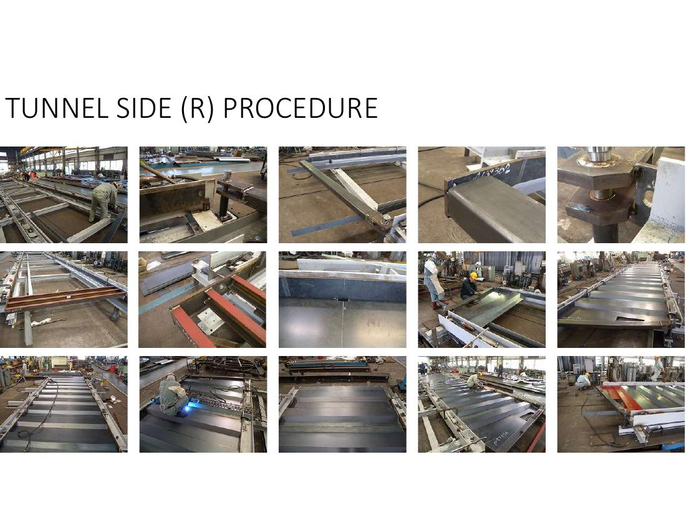
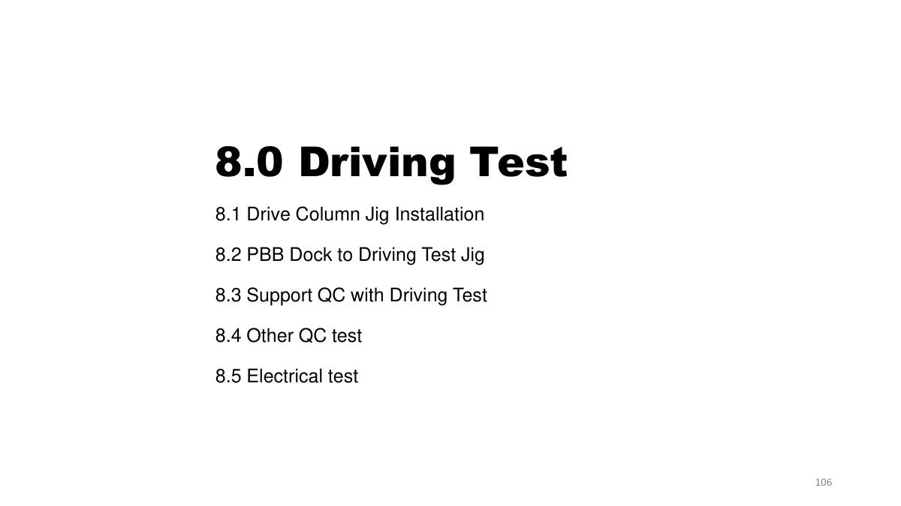
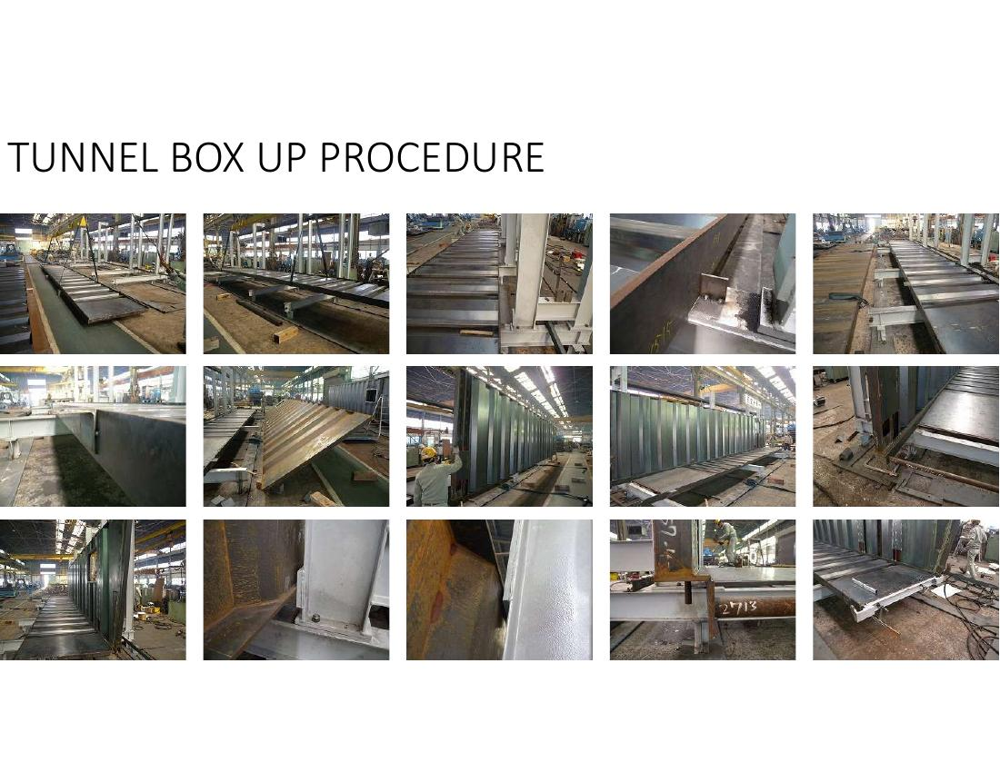

Rotunda · Cab · Tunnel · Rotunda Column · FAT
Tài liệu nội bộ — nhập mật khẩu
 Phiếu đo jig 10 beam ①–⑧
Phiếu đo jig 10 beam ①–⑧ Tấm sàn tunnel — bố trí phôi
Tấm sàn tunnel — bố trí phôi
Gá phôi side panel trên jig Sơ đồ trình tự hàn Side R
Sơ đồ trình tự hàn Side R
Mục 8.0 — kiểm tra (tài liệu lắp ráp) Cách đo ⑨⑩ + datum trên jig
Cách đo ⑨⑩ + datum trên jig
Box-up trên jig Yêu cầu dự án (tr.7 tài liệu)
Yêu cầu dự án (tr.7 tài liệu)| Lớp sơn | DFT yêu cầu |
|---|---|
| Lớp 1 (First coat) | 90 – 250 µm |
| Lớp 1 + 2 | 180 – 500 µm (lớp 1&2 cùng loại sơn — được phép thi công cùng lần) |
| Tổng 3 lớp | 240 – 570 µm |

| Hạng mục | Kiểm gì |
|---|---|
| Con lăn trần tunnel | Điều chỉnh khe hở con lăn — chạy êm, không cấn |
| Chiều cao tunnel & giới hạn | Chỉnh cao độ + công tắc giới hạn hành trình |
| Xích nylon (cable carrier) | Khoảng cách xích ↔ tấm nylon đúng spec |
| Đệm hướng & striker | Chiều cao đệm dẫn hướng + khoảng cách striker |
| Cảm biến khóa | Tác động đúng vị trí, tín hiệu về console |
| Cao su side cover · side cover SUS304L | Khe hở đều, không cọ xát khi chạy |
| Nội thất điện | Đèn trong/ngoài, console, camera, còi — bật thử toàn bộ theo checklist vận hành (xem Thư viện PBB 🛬) |